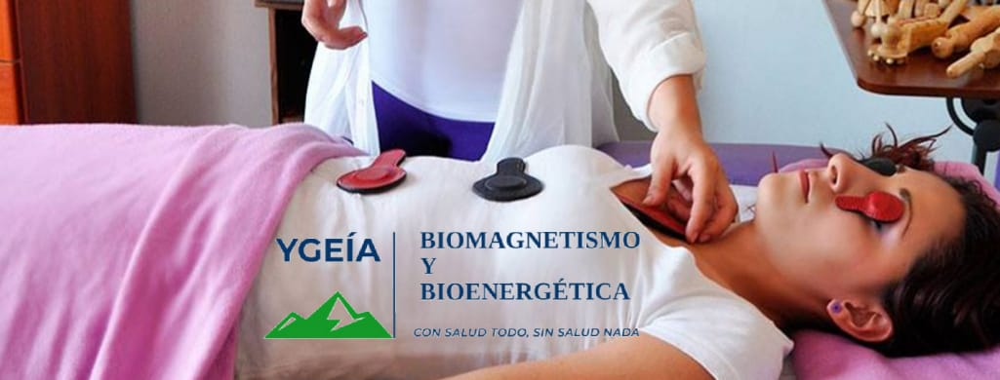
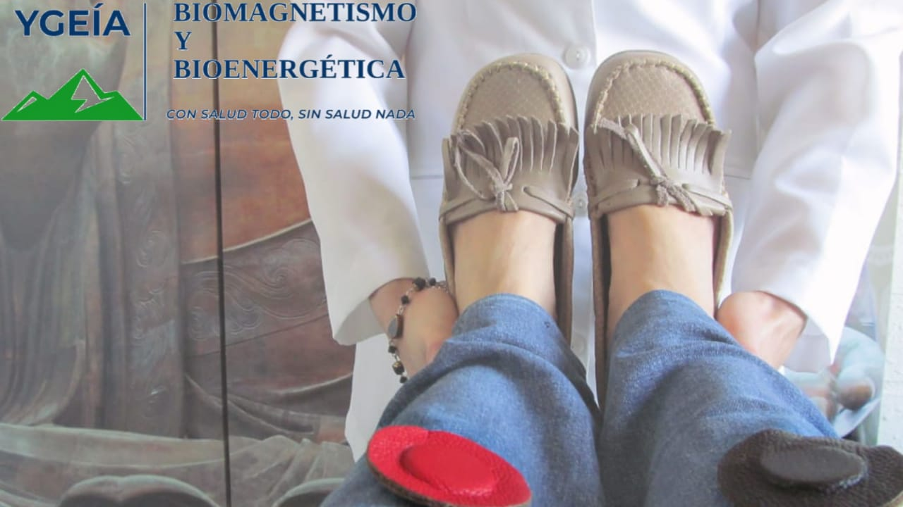

Es un procedimiento físico, consiste en la aplicación externa de imanes, que persigue borrar las distorsiones del potencial de hidrógeno (pH+) generadas por los agentes patógenos biológicos que causan enfermedades.
Puede utilizarse en conjunto con tratamientos alopáticos y medicina de patente. En el tratamiento de Biomagnetismo NO se recetan medicamentos o fármacos de patente. Ni se aplican procedimientos de medicina hospitalaria.
Es un método alternativo que pretende alcanzar la salud mediante la colocación de imanes de mediana intensidad en el cuerpo, por ende, no son tóxicos ni producen alteraciones celulares. Debido a que el Biomagnetismo es un sistema alternativo, no se contrapone con ningún otro método terapéutico.
Las consecuencias terapéuticas que tiene este sistema son: La restauración del equilibrio interno, y la disminución de las molestias, logrando bienestar y calidad de vida de los individuos. Avalado por testimonios de personas tratadas, pero no reconocidos por la medicina de patente o alopática...